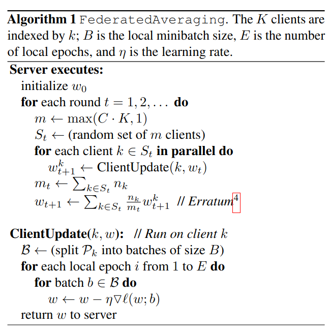
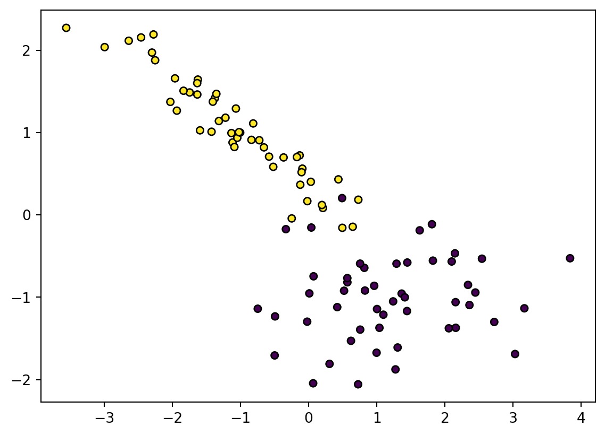

Federated learning is a technique for machine learning that uses decentralized clients to train on local data and send information back to a server without revealing the local data. Federated learning helps models be trained with greater privacy and has many natural applications.
A High-Level Look
How does Federated Learning Work?
An initial model is established on the server and the weights are sent out to all clients
Each client trains the model on its own local data and sends the weights or gradients back to the server
Aggregate the weights of each client
Update the server’s model with the aggregated weights and send the new weights to each client
A simple way to update the server’s model is to update the parameters for every gradient that gets sent from a client. This method is called FedSGD and is defined as follows:
For each client k, we do one single step of gradient descent and then average the weights together.
FedAVG
FedAVG is a modification of FedSGD that trains each client for multiple epochs and then averages the weights together. This method uses less communication than FedSGD and is one of the most commonly used algorithms. It is defined in the aformentioned paper as follows:

Example with code
We first generate a simple dataset that can be used to classify two classes.We then train a centralized model using sklearn and plot the decision boundary. Next, we train a federated model using FedAVG and plot the decision boundary. Finally, we compare the accuracy of the two models.
# Generate Dataset using sklearnfrom sklearn.datasets import make_classificationfrom sklearn.model_selection import train_test_splitimport matplotlib.pyplot as pltX, y = make_classification( n_features=2, n_redundant=0, n_informative=2, n_clusters_per_class=1, random_state=7)X_train, X_test, y_train, y_test = train_test_split(X, y, test_size=0.2, random_state=42)# Plot the dataplt.scatter(X[:, 0], X[:, 1], marker="o", c=y, s=25, edgecolor="k")plt.show()

Figure 1: A synthetic dataset generated using sklearn
Figure 2: Decision boundary after training a centralized model
Accuracy: 85.00%
import numpy as npfrom sklearn.linear_model import SGDClassifiern_clients =3n_epochs =3n_rounds =1client_models = [SGDClassifier(loss="log_loss") for _ inrange(n_clients)]server_model = SGDClassifier(loss="log_loss")# Split data into clientsX_clients = np.array_split(X_train, n_clients)y_clients = np.array_split(y_train, n_clients)# Initialize server coefficients to 0server_model.coef_ = np.zeros((1, 2))server_model.intercept_ = np.zeros(1)server_model.classes_ = np.array([0, 1])for _ inrange(n_rounds):# Set client models to be the same as the server modelfor client_model in client_models: client_model.coef_ = server_model.coef_ client_model.intercept_ = server_model.intercept_# Train each client model on its own datafor client_model, X, y inzip(client_models, X_clients, y_clients):# Split data into batches X_batches = np.array_split(X, n_epochs) y_batches = np.array_split(y, n_epochs)for _ inrange(n_epochs):for X_batch, y_batch inzip(X_batches, y_batches): client_model.partial_fit(X_batch, y_batch, classes=[0, 1])# Aggregate the client models using FedAVG using the number of samples as the weights n_samples = [len(X) for X in X_clients] weights = [n /sum(n_samples) for n in n_samples] server_model.coef_ = np.average( [client_model.coef_ for client_model in client_models], axis=0, weights=weights ) server_model.intercept_ = np.average( [client_model.intercept_ for client_model in client_models], axis=0, weights=weights )# Plot the decision boundaryx1 = np.linspace(X_test.min()-3, X_test.max()+3, 100)x2 = np.linspace(y_test.min()-3, y_test.max()+3, 100)xx1, xx2 = np.meshgrid(x1, x2)X_grid = np.c_[xx1.ravel(), xx2.ravel()]probs = model.predict_proba(X_grid)[:, 1].reshape(xx1.shape)plt.contour(xx1, xx2, probs, [0.5], linewidths=1, colors="black")plt.scatter(X_test[:, 0], X_test[:, 1], marker="o", c=y_test, s=25, edgecolor="k")plt.show()# Print the accuracyaccuracy = server_model.score(X_test, y_test) *100.0print(f"Accuracy: {accuracy:.2f}%")
Figure 3: Decision boundary after training a federated model
Accuracy: 85.00%
Now we can see that the federated model has a similar accuracy to the centralized model. If we look at the weights of the server model, we can see that they are similar to the weights of the centralized model.
print(f"Centralized Model Weights: w={model.coef_[0]}, b={model.intercept_[0]}")print(f"Federated Model Weights: w={server_model.coef_[0]}, b={server_model.intercept_[0]}")
Centralized Model Weights: w=[-6.13807248 21.28558495], b=5.731260349455407
Federated Model Weights: w=[-5.8260368 24.13905334], b=6.432089614040729
Issues with Federated Learning
Federated Learning is a promising approach to training machine learning models on decentralized data. There are situations where Federated Learning is naturally the best solution given how the data is split up. However, there are still many issues that need to be considered before using it.
While Federated Learning helps increase privacy, it does not guarantee privacy. There are many attacks that use either malicious models or gradients to extract information about the data. To have privacy Federated Learning must be combined with something such as differential privacy or fully homomorphic encryption.
Another issue is that clients typically have different amounts of data and with different usage patterns that might not be representative of the entire dataset. This is defined as Unbalanced data and Non-IID data in the Federated Learning literature.
Finally, Federated Learning has to deal with the issue of limited communication and a large number of clients. Some clients have limited bandwidth and are offline for long periods of time. This means that the server model has to be able to handle clients that are not always available.